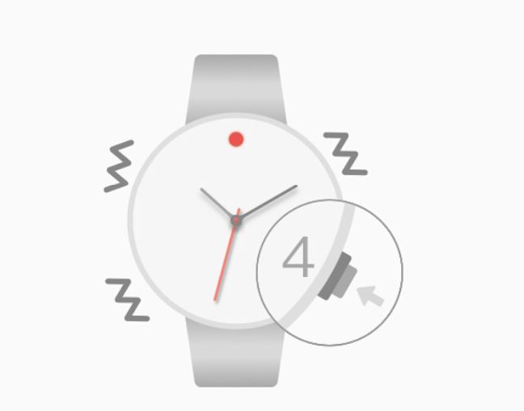

상태보기 : Bluetooth 연결 상태를 확인할 수 있습니다 4시 채권을 클릭하여 과정은 12:00 빛이 깜박 두 번 시계가 휴대폰에 연결되어 있지 않음을 나타냅니다; 12 : 약 00 표시등이 2 초 설명 시계 떨 휴대 전화가 연결되어 함께, 경우 하지 깜박이지 않는 밝은 빛은 블루투스가 열려 있지 있음을 나타냅니다
블루투스가 켜져 : 노드가 시계 모드 또는 폐쇄 상태에 4:00 이초 열기를 눌러 키를。

끊 시계와 전화 연결 상태에 따라, 통화 알림, 전화를 걸 수 4시 채권을 클릭하면。
리모콘 기재 : 시계 전화기 아래 접속 상태를 눌러 키 4:00 2 초, 카메라를 원격 촬영 모드로 전환 한 후 전화를 열고, 키 또는 비트 4시 제어 가능한 카메라 Fanwan을 눌러。
자동 시계 포인터, 크라운 빼낼 수 있으며, 부정확있는 크라운 조정 시침과 분침 돌고, 볼 수있는 전화 시간 동기화, 같은 시계로 작은 다이얼을, 왕관 작은 제어 2:00 다이얼 키를 빼낸다 회전 포인터, 시간, 분, 작은 포인터는 12시 이후에 포인트, 왕관을 다시 밀어, 포인터가 자동으로 정확한 시간을 잡아。
자주 묻는 질문 (FAQ)：
●자동으로 시간을 변경하지 않는 시계를 변경하려면 전화 시간 후. 전경 전화 응용 프로그램은, 10 초 정도 기다렸다가。
●애플 전화가 연결되어 원격 제어는 경고하지 않았거나 사진을 찍을 수 없습니다. 또는 애플 폰은 블루투스와 연결되어 있지 않습니다. 휴대 전화 비행 모드, 약 10 초를 연 다음 종료합니다. 최소 7 초 시계를 다시 시작 시계는 4:00 눌러 키를 보면서 다시 연결은 여전히 존재。
●안드로이드 폰 페어링 연결되지 않고, 시계. 다시 전화 블루투스 연결 검색을 다시 시작。
●手表与安卓手机配对上不能遥控拍照。进入蓝牙设备详情，查看该设备是否勾选为输入设备，如已勾选，打开手机相机，更改手机拍照按键为音量键控制或点按拍照。（部分安卓机型不支持输入设备。）
●手表连上安卓手机没有提醒。检查手机app来电提醒、消息提醒开关是否开启；将手机app添加进手机信任列表（部分手机安全助手会屏蔽）；检查手机通知栏提醒开关是否对手机app开启。
●其它异常情况，如蓝牙灯持续常亮或持续闪烁等。长按手表4:00位键7秒以上重启手表；操作无效则打开手表后盖按一下复位键。